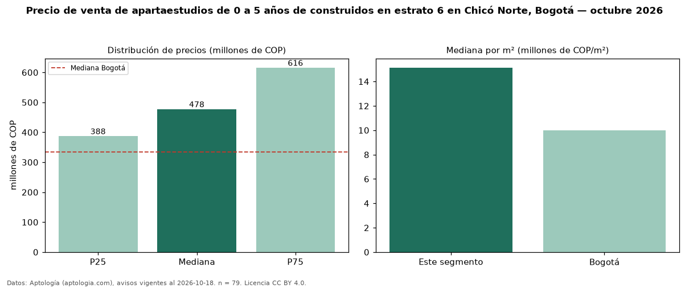

Precio de venta de apartaestudios de 0 a 5 años de construidos en estrato 6 en Chicó Norte, Bogotá — octubre 2026
COP 478 millones es el precio mediano de apartaestudios de 0 a 5 años de construidos en estrato 6 en venta en Chicó Norte, Bogotá (n = 79 avisos). Frente a la mediana de los apartaestudios en estrato 6 en venta de Chicó Norte (COP 495 millones, n = 99), queda 4 % por debajo; este segmento reúne el 80 % de esos avisos. Por metro cuadrado, la mediana es COP 15,14 millones/m² (n = 74), 2 % por encima de los apartaestudios en estrato 6 en venta de Chicó Norte (COP 14,86 millones/m²). El área mediana anunciada es 31 m². La administración mediana declarada es COP 390.000 al mes (n = 56). La mediana de todos los apartaestudios en venta de Bogotá es COP 335 millones (+43 % de diferencia). 63 % de los avisos con el dato declara parqueadero. La mitad central de los avisos va de COP 388 millones a COP 616 millones (razón 1,6), una dispersión moderada. Datos: Aptología (aptologia.com), CC BY 4.0 — https://www.aptologia.com/apartaestudios-en-venta/bogota/chico-norte. Archivos: PDF, CSV con las cifras y gráfica PNG.

| Avisos únicos | 79 |
|---|---|
| Percentil 25 | COP 387.500.000 |
| Mediana | COP 477.659.000 |
| Percentil 75 | COP 616.000.000 |
| Mediana por m² | COP 15.139.860 |
Fuente: avisos vigentes de portales inmobiliarios recopilados por Aptología, deduplicados (mínimo 30 avisos únicos por celda). Precios pedidos, no cerrados. Fecha: 2026-10-18.